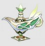
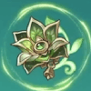

Нахида

Нахида - 5-звездочный герой стихии Дендро, который вооружен катализатором.
Билд "Поддержка Дендро"
Оружие
Сновидения тысячи ночей
Повышает мастерство стихий персонажа на 32 единицы, если в отряде присутствуют бойцы той же стихии, или увеличивает его стихийный урон на 10%, если элементы других членов команды не совпадают. Кроме того, у всех участников группы (за исключением того, кто экипирован данным оружием) мастерство стихий увеличивается на 40 единиц.
или
Солнечная жемчужина

Обычные атаки увеличивают урон навыков стихий и взрыва стихий на 20/25/30/35/40% на 6 секунд. Точно так же атаки навыков стихий и взрыва стихий увеличивают урон обычной атаки на 20/25/30/35/40% на 6 секунд.
Артефакты
Воспоминания дремучего леса
(2) +15% к урону Дендро
(4) Когда противник получает стихийный урон, сопротивляемость к Дендро уменьшается на 25% на 8 секунд. Может срабатывать, когда персонаж, наносящий урон, находится за пределами поля боя.
Рекомендуемые характеристики артефактов
Основные

Мастерство стихий

Урон Дендро / Мастерство стихий

Шанс критического попадания / Урон / Мастерство стихий
Второстепенные
- 1.Восстановление энергии
- 2.Шанс критического попадания / Критический урон
- 3.Мастерство стихий
- 4.Атака%